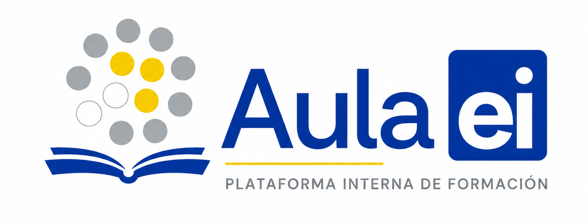

Cargando plataforma…
Preparando la plataforma. Si algún recurso de GitHub Pages tarda, se mostrará un diagnóstico en pantalla.

Preparando la plataforma. Si algún recurso de GitHub Pages tarda, se mostrará un diagnóstico en pantalla.